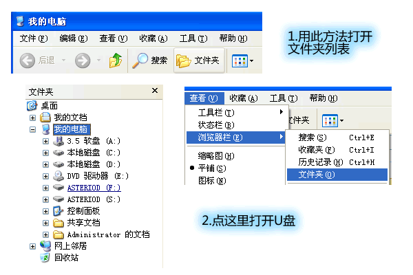
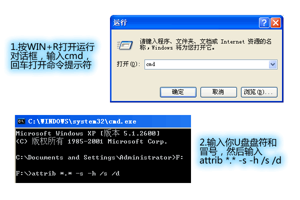

[原创]U盘杀毒防毒方法
经常看到身边朋友的U盘中毒，而这种病毒的特点就是插入U盘电脑就会中毒，而且会感染以后插入的别的U盘- -
于是。。来杀毒吧，杀完后还可以防止再次中毒~~
PS:我习惯把所有连上电脑显示可移动磁盘的设备(U盘，MP4，MP3，储存卡之类)称为U盘，把所有具有感染性的恶意程序称为病毒。。
1.我U盘中毒了没有？
U盘中毒有以下症状：
1.双击打不开磁盘图标。←双击盘符时自动运行了病毒
2.右键菜单出现AUTO项或其他不明项目。←很经典的感染方式，自动播放
3.自动播放时出现程序选项(而不是图片，音乐，文件之类)。←文件夹被感染，被隐藏后替换成了病毒
4.所有文件夹消失。←文件夹被感染，而伪装成文件夹的病毒被杀毒软件杀掉了
5.打开U盘时文件夹图标变成程序形状，然后马上恢复。←文件夹被感染，被隐藏后替换成了病毒
6.不能复制文件夹，复制出来打不开。←文件夹被感染，被隐藏后替换成了病毒，你复制的其实是病毒程序
7.U盘里出现不明EXE文件，图标为文件夹。←伪装成文件夹的病毒。。。
8.想不出来了……
以上症状中出现一条即代表你的U盘中毒了。。←一般会出现一条以上- -
2.中了什么毒？
首先我们要了解一下WINDOWS系统的一项功能：自动播放。它可以帮你在放入CD，DVD等光盘时自动打开播放器播放，也可以在你插入U盘时快速访问里面的文件。双击盘符时也可以快速打开。但这个功能给病毒创造了良好的条件，插入中毒U盘或某些含毒光盘时自动打开病毒程序。
↑↑↑↑上面说的仅仅是很早以前就有的，非常老土的传播方式，现在几乎所有的安全软件都可以防御这种病毒。插盘时按SHIFT键可以跳过自动播放。
于是病毒发展出了新的攻击方式：伪装文件夹。病毒首先隐藏你U盘根目录里所有的文件夹，然后建立跟你文件夹同名的病毒程序，图标为文件夹图标……打开这个程序时就传播病毒并打开真实的文件夹。。不得不佩服病毒作者的创意啊- -
还有效率最低但最经典的感染方法：感染程序。你执行被感染程序时就执行病毒。这是病毒刚刚出现时使用的感染方式，现在还有病毒在用。。
3.准备杀毒~~~
首先，找台没中毒的电脑。不少人发现即使把U盘格式化了还是有毒，那是因为你电脑中毒了，格式化刚完病毒就又感染了- -
然后，安全打开U盘。

打开我的电脑，按住SHIFT键，插上U盘。等U盘盘符出来再松开。点工具栏上的文件夹按钮，或者选菜单-查看-浏览器栏-文件夹。然后再点击左侧列表里的U盘。←右键打开不可取，病毒可以伪装右键菜单，选“打开”，“资源管理器”，甚至“搜索”都会打开病毒
最后，

打开工具-文件夹选项-查看，取消“隐藏受保护的操作系统文件”(无视警告选“是”)，“隐藏已知文件类型的扩展名”。点击选中“显示所有文件和文件夹”。←不能正常选择的话说明这台电脑中毒了。。很好修复的
4.杀毒~~！！
1.

按WIN+R组合键(WIN是Z和SHIFT键下面，CTRL键右边，ALT键左边的那个键)打开运行对话框。输入cmd，回车打开命令行。←命令行其实很好用
2.输入你U盘的盘符，再打一个冒号 : ，回车。←进入U盘
3.输入 attrib *.* -s -h /s /d ，回车。←把所有文件去掉隐藏属性
4.现在再看看你的U盘，是不是发现了很多EXE文件或者autorun.inf文件？←你看到两个一样的文件夹？那么有一个是病毒，右键菜单不是“打开，搜索，资源管理器”之类的是病毒。
5.还等什么- -把它们删除吧~~~还有陌生的BAT，CMD，SCR，PIF文件，WINDOWS旗子图标的文件，齿轮图标的文件，删~~~←autorun.inf的图标是文件夹？删除试试~~删不掉就算了。。
6.杀毒完成，鼓掌~~~别着急，接下来还要免疫你的U盘，不再受病毒感染~~~
5.免疫U盘~~~！！！
1.还没关命令行吧~~关了就重复上面1，2步。
2.输入 md autorun.inf ，回车。←建立一个文件夹，名称跟自动播放的文件名相同，这样病毒就不能创建自动播放文件了
3.没有出现“子目录或文件 autorun.inf 已经存在。”的话，把下面这些粘贴进去，最后回车一下~~←可能你已经免疫过了~~
cd autorun.inf
md 1..\
md 2..\
md AntiVirus..\
cd..
attrib autorun.inf +s +h +r
4.看看你的U盘，是不是多出了一个文件夹？而且删不掉~~现在你已经基本免疫了自动播放类的病毒。←是基本免疫，这个文件夹可以改名的= =
5.接下来是文件夹图标病毒免疫，对付这种病毒嘛，给文件夹改个图标就行了。看到图标不对就从地址栏打开~~←在地址栏里输入或粘贴文件夹名，回车即可
6.怎么改呢？打开一个本地磁盘，随便找一个文件夹，右键选属性-自定义，点最下面的更改图标，选一个你喜欢的图标，确定。←U盘上不能进行这样的操作- -
7.然后进入这个文件夹，找到Desktop.ini，复制。←这个文件就是给文件夹加图标的文件了
8.把这个文件粘贴到U盘里的所有文件夹里。←怎么没出现图标呢。。别急，往下看
9.再次回到命令行~~别说你关了- -
10.输入 attrib 文件夹名 +s ，把文件夹名换成你文件夹的名字。←给这个文件夹加上系统属性，这样才能使Desktop.ini生效
11.重复几次直到所有文件夹都被设置成系统属性。
12.现在看看你的U盘，文件夹图标是不是变了？←没变的找我。。。
13.还有感染程序型病毒，这个比较好防御。把程序设置成只读的就行了。←右键属性里设置
14.最后，平常要养成良好的使用习惯，按SHIFT键插入U盘，往U盘复制文件前打包压缩，右键打开文件夹，等等。←注意右键，如果是“运行方式”就是病毒
15.好了，现在你的U盘就不太可能会受病毒的侵扰了……